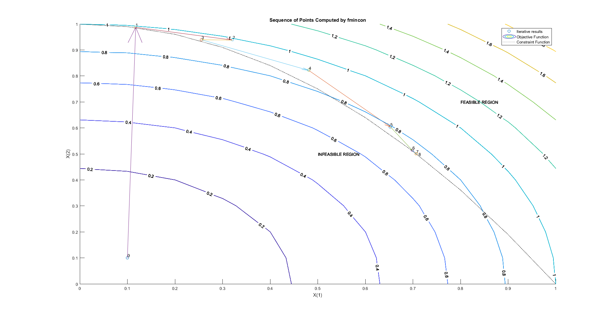

Contents
function [history,searchdir] = runfmincon
Set up shared variables with OUTFUN
history.x = [];
history.fval = [];
searchdir = [];
history.y = [0 0];
Call optimization
fun = @myfun;
a = [.1 .1];
A = [];
b = [];
Aeq = [];
beq = [];
lb = [];
ub = [];
nonlcon = @constraint;
options = optimoptions(@fmincon,'OutputFcn',@outfun,...
'SpecifyObjectiveGradient',true,'SpecifyConstraintGradient',true','Display','iter','Algorithm','active-set');
xsol = fmincon(fun , a , A , b , Aeq , beq , lb , ub , nonlcon, options)
Max Line search Directional First-order
Iter F-count f(x) constraint steplength derivative optimality Procedure
0 1 0.02 0.89 Infeasible start point
1 3 0.987019 -0.0002996 1 0.204 0.887
2 5 0.983714 -0.04146 1 -0.225 0.56
3 7 0.946764 -0.004236 1 -0.633 1.37 Hessian modified
4 10 0.906167 -0.05289 0.5 -0.414 0.84
5 12 0.790108 -0.02941 1 -0.696 0.599
6 14 0.752322 -0.002134 1 -0.475 0.0553
7 16 0.750071 -7.132e-05 1 -0.154 0.000573
8 18 0.75 -4.495e-08 1 -0.229 1.16e-07 Hessian modified
Local minimum found that satisfies the constraints.
Optimization completed because the objective function is non-decreasing in
feasible directions, to within the default value of the optimality tolerance,
and constraints are satisfied to within the default value of the constraint tolerance.
Active inequalities (to within options.ConstraintTolerance = 1e-06):
lower upper ineqlin ineqnonlin
1
xsol =
0.7071 0.5000

Stop function (THIS IS WHERE ALL THE MAGIC HAPPENS)
function stop = outfun(x,optimValues,state)
stop = false;
switch state
case 'init'
figure('rend','painters','pos',[10 10 1920 1080])
hold 'on'
case 'iter'
history.fval = [history.fval; optimValues.fval];
history.x = [history.x; x];
searchdir = [searchdir;...
optimValues.searchdirection'];
plot(x(1),x(2),'o');
if x ~= a
dp = x - history.y;
quiver(history.y(1),history.y(2),dp(1),dp(2),0);
end
history.y = x;
if size(history.x)<9
text(x(1),x(2)+0.01,...
num2str(optimValues.iteration));
title('Sequence of Points Computed by fmincon');
else
text(x(1)+0.005,x(2),...
num2str(optimValues.iteration));
title('Sequence of Points Computed by fmincon');
end
x=[0:.1:1];
y=[0:.1:1];
[X,Y] = meshgrid(x,y);
Z=X.^2+Y.^2;
contour(X,Y,Z,'ShowText','on')
xlabel('X(1)')
ylabel('X(2)')
z=1-x.^2;
plot(x,z,':','Color',[0,0,0])
legend('Iterative results','Objective Function','Constraint Function');
text(0.8,0.7,'FEASIBLE REGION')
text(0.5,0.5,'INFEASIBLE REGION')
otherwise
end
end
Objective function definition
function [f,gradf] = myfun(x)
f = x(1)^2 + x(2)^2;
gradf = [2.*x(1); 2.*x(2)];
end
Constraint function definition
function [g,geq,gradg,gradgeq] = constraint(x)
g = 1 - x(1)^2 - x(2);
geq = [];
gradg = [-2.*x(1); -1];
gradgeq = [];
end
end
ans =
struct with fields:
x: [9×2 double]
fval: [9×1 double]
y: [0.7071 0.5000]